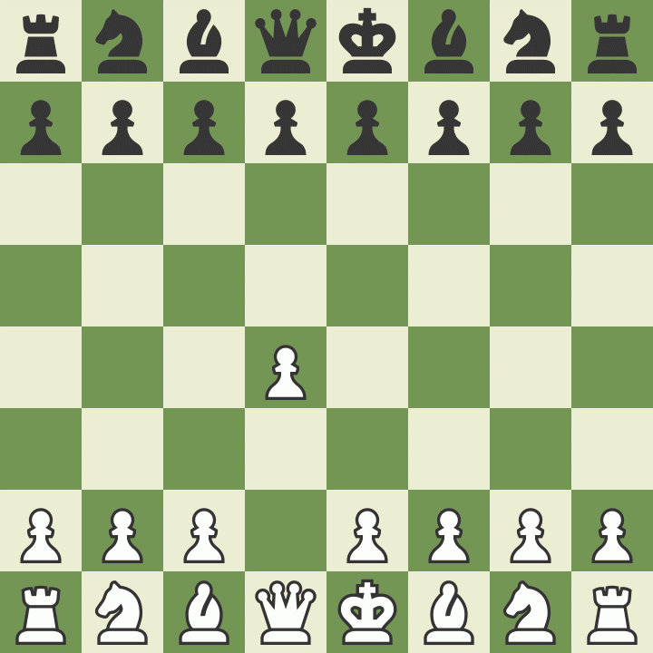
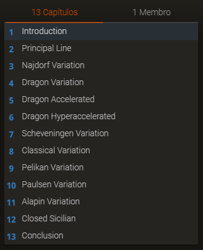
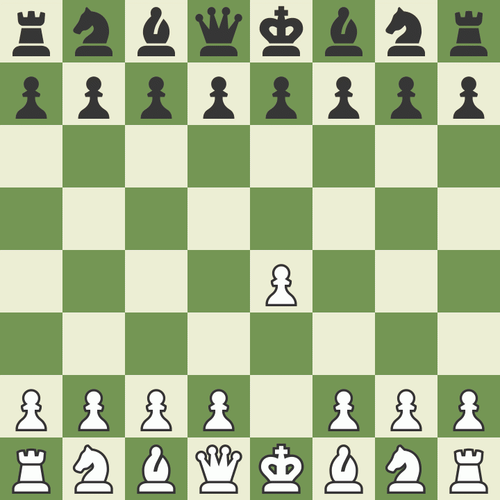

As aberturas do xadrez começaram a surgir no final do século XV, sendo a primeira delas a abertura
do "Jogo Italiano", com três variantes principais: Giucco Piano, Giucco Pianíssimo e a Ruy
López.
Poxa, legal pra caramba, mas o que é uma abertura e pra que diabos ela serve?
Uma abertura é o conjunto dos primeiros lances do jogo e, embora possa não parecer, muitas vezes
decidem qual será o ritmo do jogo e, em alguns casos, o lado que está melhor logo na abertura pode
ganhar o jogo sem muita dificuldade. Os objetivos principais de qualquer abertura séria (sim, o
pessoal do xadrez também faz mamaquice :v) são dominar o centro (quem tem o centro tem muito mais
possibilidades de moviemntos), desenvolver as peças, ou seja, tirar elas da posição inicial e
colocá-las em quadrados que aumente a influência delas no jogo, e proteger o rei, geralmente através
do roque (Se você não sabe o que é o roque, você tá moscando, vai lá na home aprender a mover as peças direito).
IMPORTANTE! Eu vou te mostrar algumas aberturas, mas você não precisa saber todas elas, eu
mesmo não conheço tudo de todas, e nem deve passar o resto da vida estudando elas, o melhor a se
fazer é escolher uma abertura simples no começo e depois que você descobrir seu estilo de jogo, você
começa a tentar algo novo.
Agora que você já sabe o que é e para que serve uma abertura, bora aprender o básico de algumas.
Abertura Italiana
"Ainn vai falar de abertura velha? Acho que todo mundo já deve saber counterar isso ae!"
ACHOU ERRADO, OTÁRIO! A abertura italiana é usada pelos Grandes Mestres (A nata do xadrez) até hoje,
então vamo logo mostrar a mainline dela:
Veja como ela possibilita um desenvolvimento rápido na ala do rei, no lance 3 o bispo e o cavalo já
estão desenvolvidos e atacando (Dá um ligue no bispo mirando f2, se o cara moscar você tem uns
lances que podem te dar uma vantagem de 8 pontos ou até um cheque mate) além da possibilidade de
proteger o rei com o roque! Minha abertura favorita S2. Para ver mais sobre ela e as variantes que
eu falei lá em cima, clique aqui para as versões do
Giucco ou aqui para aprender a Ruy
Lopez.
Gambito da Rainha
Talvez você só tenha se interessado por xadrez por causa da série com esse mesmo nome, então eu
achei legal te mostrar a abertura, mas só pra te avisar, o que ***** é um Gambito? Um gambito é uma
troca, mas calma lá, no gambito da dama, você não troca as damas! Esses movimentos só tem esse nome
porque você começa movendo o peão da dama.

O plano aqui é trocar (gambitar) o peão de C por mais espaço no centro e, se o seu adversário tiver
uma minhoca no lugar do cérebro, você pode ganhar um cavalo logo na abertura.
Seguinte, o gambito da dama é a abertura mais estudada do xadrez, então você deve imaginar que eu
não sou louco o suficiente e nem tenho tempo pra te ensinar toda a teoria, então vou passar a pica
pro meu grande companheiro Lenin Pérez, Clique aqui pra
dar em cima da Beth Harmon.
Mas não só de brancas vive um jogador de xadrez, em mais ou menos 50% das vezes, você vai jogar de
pretas, mas relaxa, tem aberturas pra elas também.
Defesa Siciliana
Outra abertura ridiculamente famosa e que você deve estar todo empolgado pra aprender, mas eu já te
aviso, a Siciliana não é uma abertura fácil, também tem muita teoria e é uma daquelas aberturas que
eu falei lá no começo que decidem o ritmo do resto do jogo inteiro, quando a Siciliana aparece,
alguem vai sair vitorioso, não tem empate (beleza, é meio exagerado falar que não tem empate, mas é
uma porcentagem até que pequena, cerca de 30%).
AGORA ABRAM ALAS PARA ELA, A SICILIANA!
E é isso, esse é o começo da siciliana, agora se liga na quantidade de linhas que derivam dela

Então como eu sou filho de Deus, vou deixar mais um
estudo pra você, mas eu posso dar uma ideia do que ela planeja fazer. O objetivo de c6 é não
permitir d4, causando uma luta muito acirrada pelo centro.
Defesa Francesa
Talvez você não conheça ela, mas a Francesa é uma abertura bem famosa e extremamente irritante de se
jogar contra, eu ainda uso ela, mas como ela não se adequa ao meu estilo de jogo (mais aberto), eu
quero parar de jogar com ela, mas NÃO ME IMITE! Faça o que eu falei lá no começo, vá jogando e
descubra como você se sente mais confortável, agora, a francesa:

"Mas Carvalho, como esse lixo me ajuda a controlar o centro ou desenvolver minhas peças?" Calma, meu
nobre, depois do e6, a gente planeja fazer d5, lutando pelo centro, mas realmente fica um pouquinho
difícil desenvolver suas peças, mas relaxa, é igualmente difícil pras brancas, elas não tem tantos
movimentos bons de desenvolvimento e tem uma certa dificuldade pra te atacar, por isso a francesa é
tão irritante, mas antes de achar que ela só leva a jogos chatos e empates, dê uma olhada no no estudo do nosso polvo predileto. Aliás,
FINALMENTE uma abertura que tem poucas variações, dessa vez são só 4, uma dica, você vai encontrar
as varições Troca e Avanço muito mais do que as outras.
Você deve ter percebido que eu realmente gosto do polvo mais brabo do mundo, Lenin Pérez, então vou
deixar todos os estudos dele além de uma lista com todas as aberturas pra você se deliciar, mas eae, qual a sua abertura favorita e por que? Deixa aqui nos comentários :)
Já encheu o saco da sua abertura padrão e tá a fim de brincar com algo novo? Sorteie uma abertura agora mesmo (Aberturas troll inclusas)


 Mamaco do Banner GM (3500)
Mamaco do Banner GM (3500)
 Luiz Carlos (950)
Luiz Carlos (950)